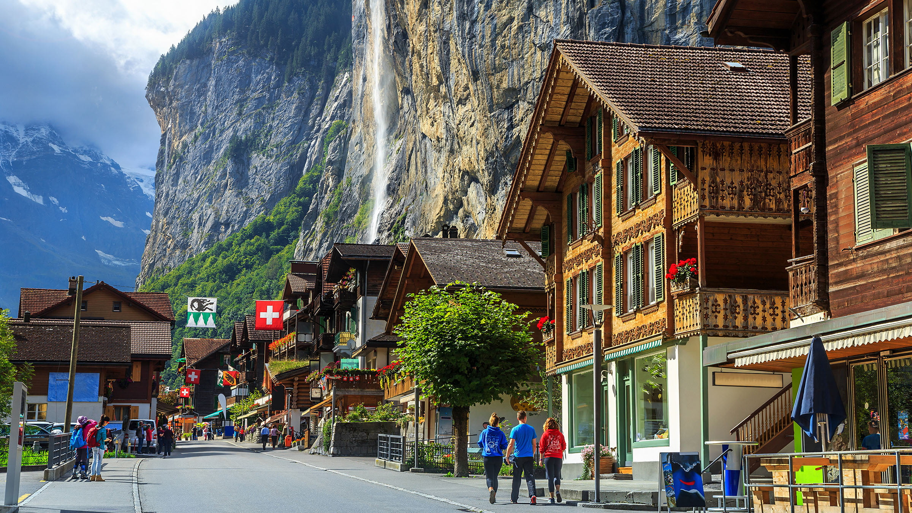
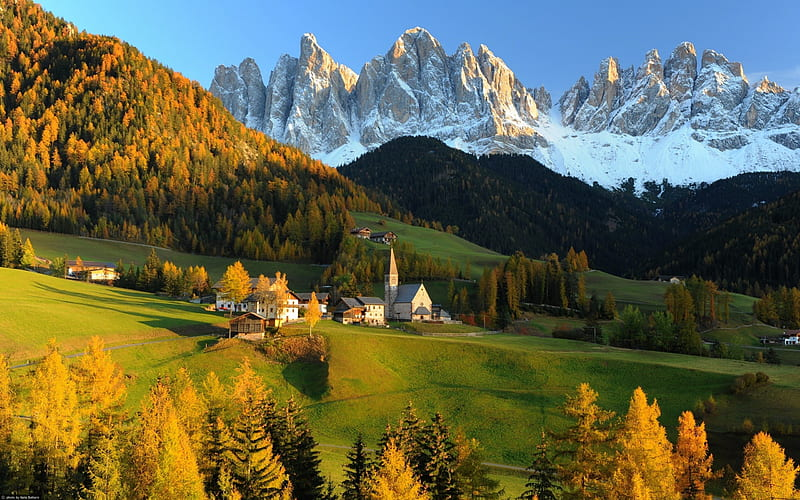
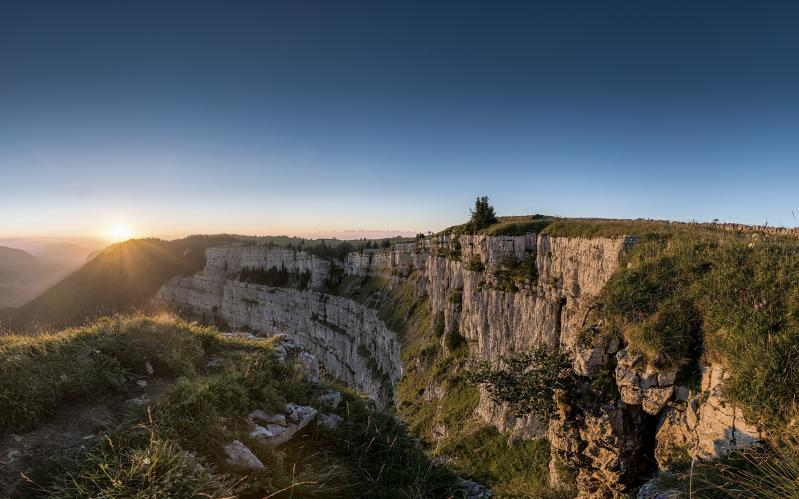

SUIZA

En el corazón de Europa se encuentra este país alpino con paisajes de ensueño. Sabedora de las maravillas naturales que atesora dentro de sus fronteras,
Suiza ha sabido proteger su entorno con cuidado. Los Alpes ocupan la mayor parte de su territorio y ello se traduce en la inagotable oferta de actividades
que se encuentran. Suiza se divide en tres zonas geográficas: los Alpes, la Planicie central y el Jurá.
Los Alpes

Resulta difícil imaginarse a Suiza sin montañas. La región alpina ocupa gran parte del territorio nacional y se extiende desde el lago Lemán hasta la frontera
con Austria. Los Alpes suizos registran 48 picos con altitudes superiores a 4.000 metros, así como numerosos lagos. El espacio alpino también es el hábitat
para muchas especies animales y vegetales.
Los Alpes llevan forjando la identidad del país desde tiempos inmemoriales y son de gran importancia histórica y geopolítica.El turismo se desarrolla en gran
parte en esta región. Los numerosos pasos y túneles en los Alpes suizos son importantes lugares de tránsito. En los Prealpes y en la franja septentrional de
los Alpes se encuentran los lagos de Thun, de Brienz y de Zug, así como el lago de los Cuatro Cantones, mientras que en la franja meridional se ubican el
lago Mayor y el lago de Lugano.
Planicie Central

Entre las tres zonas geográficas de Suiza, la Planicie central, o «Tierra del medio», abarca alrededor del 30% del territorio nacional. Limita al norte con el
macizo del Jurá y el Rin y al sur con el lago Lemán y la cordillera alpina. La Planicie central abarca cerca del 30% del territorio suizo y da cobijo a más de
dos tercios de la población del país. Es la región más densamente poblada de Suiza. Las superficies agrícolas ocupan cerca del 50% de la Planicie y los bosques
un 24%. La Planicie central es la región donde más se desarrollan las zonas urbanas y de infraestructuras y donde más densos son el tráfico y la red vial.
La Planicie es también la región donde se practica la agricultura más intensiva.
Jurá

La cordillera del Jurá se extiende al oeste de Suiza. Delimita la Planicie central por el noroeste y cubre un diez por ciento de la superficie total del país.
El macizo del Jurá se extiende también por Alemania y Francia. En Suiza constituye una frontera natural con Francia al oeste. En esta región poco poblada
dominan los bosques y la agricultura.